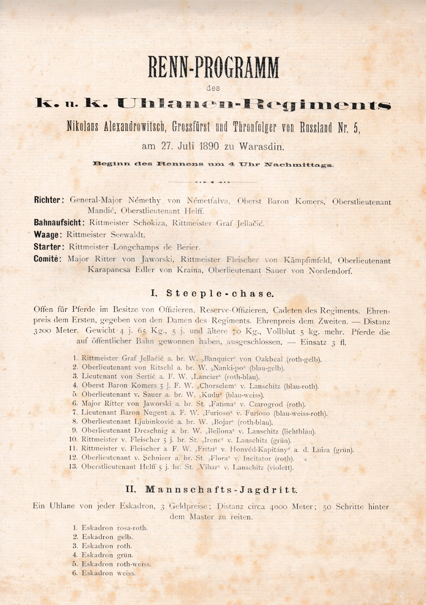

Konjaništvo
KRONOLOGIJA
25, 9, 1877.
prvo pozato konjičko natjecanje časnika i vojnika


Program konjskih utrka Carske i kraljevske ulanske pukovnije Nikole Aleksandrovića, Josip Platzer, Varaždin, 1890., GMV KPO 8698
1892.
izgrađeno nadkrito jahalište u Optujskoj ulici
1892.
uređen hipodrom kod Hraščice
1892.
održano konjaničko natjecaje na Vinokovčaku
1921.
u konjičkim natjecanjima prvi puta nastupaju građani, obrtnici i seljaci
1922.
osnovano Kolo jahača i vozača Zrinski
1924.
osnovan Hrvatski konjanički sokol
1952.
osnovan Konjanički klub Kalnik, kasnije mijenja ime u Varaždin
GMV 59640
1956.
otvoren novi hipodrom u Hraščici
1. - 3. 8. 1958.
prvenstvo NR Hrvatske u Varaždinu
1992.
osnovan Konjički klub Equs Cabalus
1995.
osnovan Konjički klub Varaždin 95
1995.
4. kolo Croatia cupa